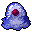
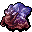
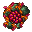

ジェリーの一覧 List of jellies
英語版 CrawlWiki の記事「List of jellies」(0.34 向け、2026-07-01 版)の翻訳です。原文の著者は編集履歴をご覧ください。
ジェリー類は、粘液の神ジーヴァに仕える不定形のクリーチャーだ。果てしなく増え続けるために、消化できるものなら何でも見境なく探し出して取り込む。近接攻撃が酸を帯びていることが多く、AC と武器のダメージを大きく削られるので、近くでは用心したい(ジェリーによっては別の能力を持つものもいる)。スライムの穴ぐらには大量にいるほか、ほかの分岐にもときどき現れる。
ジェリーはすべて不定形なので、投げ網、蜘蛛の巣、締め付けが効かない。
ジーヴァの信徒はどんなジェリーも恐れる必要はない。ただしジーヴァを信仰していると、周りのジェリーが粘液の神の栄光のために床のアイテムを食べてしまう。
ジェリーの種類
- J
 内質: 動き出した迷宮のゴミ。危ないのは駆け出しの冒険者くらいのものだ。ときどき敵に氷結を使う。
内質: 動き出した迷宮のゴミ。危ないのは駆け出しの冒険者くらいのものだ。ときどき敵に氷結を使う。 - J
 ジェリー: 酸性のねばねばした塊にすぎない。腐食を避けたいなら離れたところから倒すこと。
ジェリー: 酸性のねばねばした塊にすぎない。腐食を避けたいなら離れたところから倒すこと。 - J
 スライム: 1 体ずつなら大したことはないが、何体も積み重なると巨大で恐ろしく強力なスライムの山になる。
スライム: 1 体ずつなら大したことはないが、何体も積み重なると巨大で恐ろしく強力なスライムの山になる。 - J
 虚無のウーズ: とびきり速いウーズ。攻撃で呪文を乱し、呪文の使い手を包み込んで詠唱の邪魔をする。
虚無のウーズ: とびきり速いウーズ。攻撃で呪文を乱し、呪文の使い手を包み込んで詠唱の邪魔をする。 - J
 紺碧ジェリー: 素早く動く塊で、攻撃は酸ではなく冷気を帯びている。冷気への備えがないキャラクターは、近接攻撃で大ダメージを受ける。
紺碧ジェリー: 素早く動く塊で、攻撃は酸ではなく冷気を帯びている。冷気への備えがないキャラクターは、近接攻撃で大ダメージを受ける。 - J
 酸のブロブ: スライムの穴ぐらの住人の中でも特に恐れられている。素早く、力も強く、酸を吐きかけて離れた敵も溶かす。
酸のブロブ: スライムの穴ぐらの住人の中でも特に恐れられている。素早く、力も強く、酸を吐きかけて離れた敵も溶かす。 - J
 岩スライム: 石の層に覆われた、非常に頑丈なスライム。その攻撃は雪崩のような勢いで相手を後ろへよろめかせる。
岩スライム: 石の層に覆われた、非常に頑丈なスライム。その攻撃は雪崩のような勢いで相手を後ろへよろめかせる。 - J
 形なきクラゲ: 危険な近接戦闘のクリーチャー。触手で締め付け、毒針で麻痺させてくる。
形なきクラゲ: 危険な近接戦闘のクリーチャー。触手で締め付け、毒針で麻痺させてくる。 - J
 星のジェリー: 近接攻撃を行う塊。大きな傷を負うと、とても危険な飛び道具である流れ星を生み出す。
星のジェリー: 近接攻撃を行う塊。大きな傷を負うと、とても危険な飛び道具である流れ星を生み出す。 - J

巨大アメーバ: 近接攻撃を行う塊。近接攻撃で自分の分身を生み出し、相手を引きずる攻撃も持つ。 - J

形態形成ウーズ: 危険な近接戦闘のジェリー。その攻撃を受け続けると、少しずつジェリーの姿に変えられてしまう。 - J

這い寄る変形体: 壁に張りついて動けない。焼酸の胞子嚢を生み出し、これが爆発して酸のダメージを与える。また、十分に離れた壁に生まれたての変形体を呼び出し、これが弱い酸の爆裂球を撃ってくる。本体を倒せば、呼び出されたものも消える。 - J
 スライムドラ: スライムの穴ぐらで最上位のスライム。エクステンデッドより前に出るモンスターの中で最も強い基本の近接攻撃を持ち、そのうえ攻撃は酸のブランドつきだ。スライムとヒドラの仕組みを独特の形で併せ持つ。
スライムドラ: スライムの穴ぐらで最上位のスライム。エクステンデッドより前に出るモンスターの中で最も強い基本の近接攻撃を持ち、そのうえ攻撃は酸のブランドつきだ。スライムとヒドラの仕組みを独特の形で併せ持つ。


ユニークのジェリー
- J
 溶解者: ゼラチン状の(そして腹を空かせた)ジーヴァの司祭。敵意ある眼球の群れであなたを埋め尽くしてくる。
溶解者: ゼラチン状の(そして腹を空かせた)ジーヴァの司祭。敵意ある眼球の群れであなたを埋め尽くしてくる。 - J
 ロイヤルジェリー: 形なきものすべての紛れもない支配者。スライムの穴ぐらの最下層で、ゾットのルーンの一つ、ぬめりのルーンを守っている。
ロイヤルジェリー: 形なきものすべての紛れもない支配者。スライムの穴ぐらの最下層で、ゾットのルーンの一つ、ぬめりのルーンを守っている。
廃止されたジェリー
- J
 死のウーズ: なぜか不死の身となった、腐った肉の山。腐食の代わりに腐敗を引き起こした。0.27で削除された。
死のウーズ: なぜか不死の身となった、腐った肉の山。腐食の代わりに腐敗を引き起こした。0.27で削除された。 - J
 茶色のウーズ: 普通のジェリーとほぼ同じように振る舞う厄介者で、近接攻撃で装備を腐食させ、床のアイテムを食べた。ただし攻撃はずっと強烈だった。0.15で削除された。
茶色のウーズ: 普通のジェリーとほぼ同じように振る舞う厄介者で、近接攻撃で装備を腐食させ、床のアイテムを食べた。ただし攻撃はずっと強烈だった。0.15で削除された。 - J
 脈打つ肉塊: 不浄な死霊術が生んだねじれた産物。のろのろと動く哀れな肉の山で、触れたものに変異を起こして姿をゆがめた。0.15で削除された。
脈打つ肉塊: 不浄な死霊術が生んだねじれた産物。のろのろと動く哀れな肉の山で、触れたものに変異を起こして姿をゆがめた。0.15で削除された。 - J
 大アメーバ: ジェリーの中で一番退屈なやつ。大きくて肉づきがよく、いちおう食べられなくもなかったが、それ以外に面白みはなかった。0.14で削除された。
大アメーバ: ジェリーの中で一番退屈なやつ。大きくて肉づきがよく、いちおう食べられなくもなかったが、それ以外に面白みはなかった。0.14で削除された。